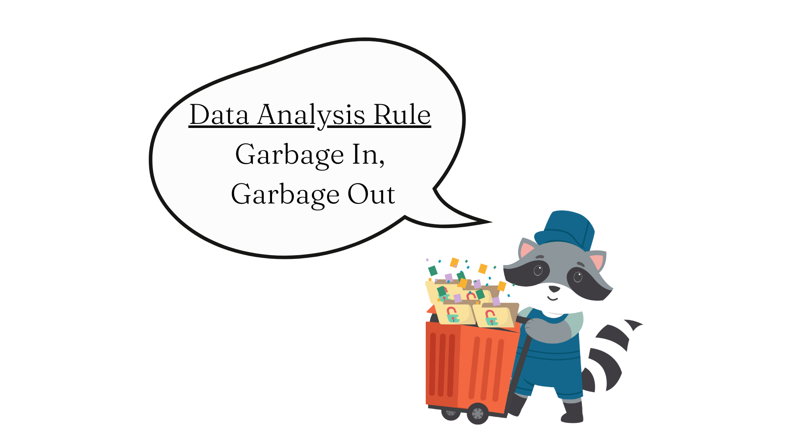
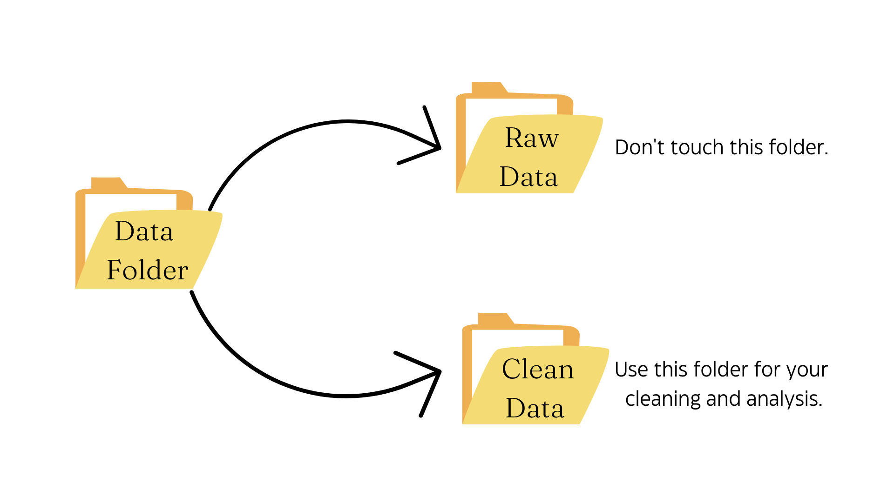
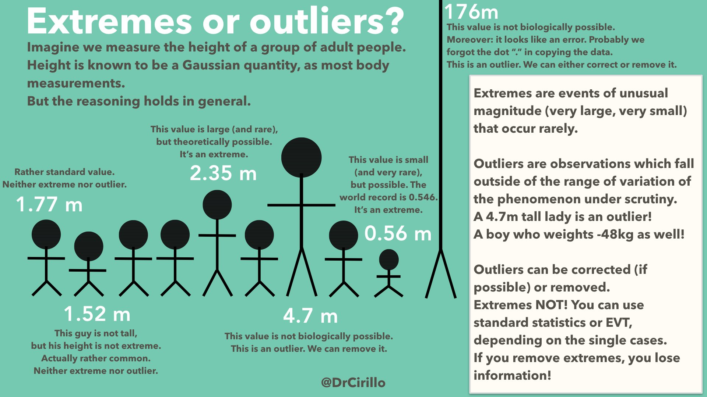
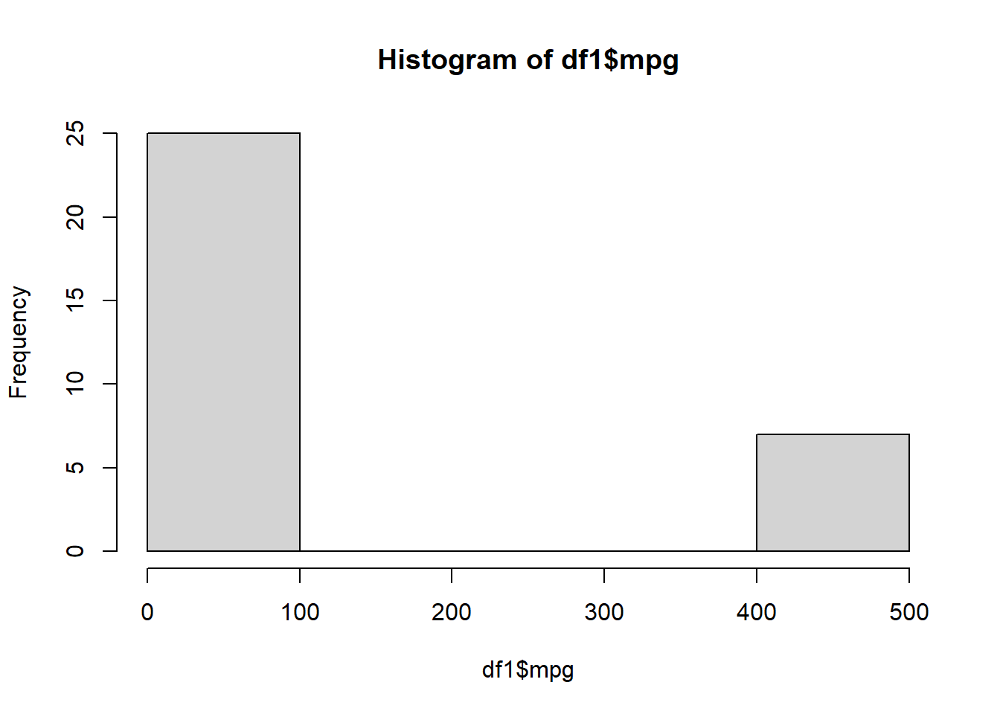
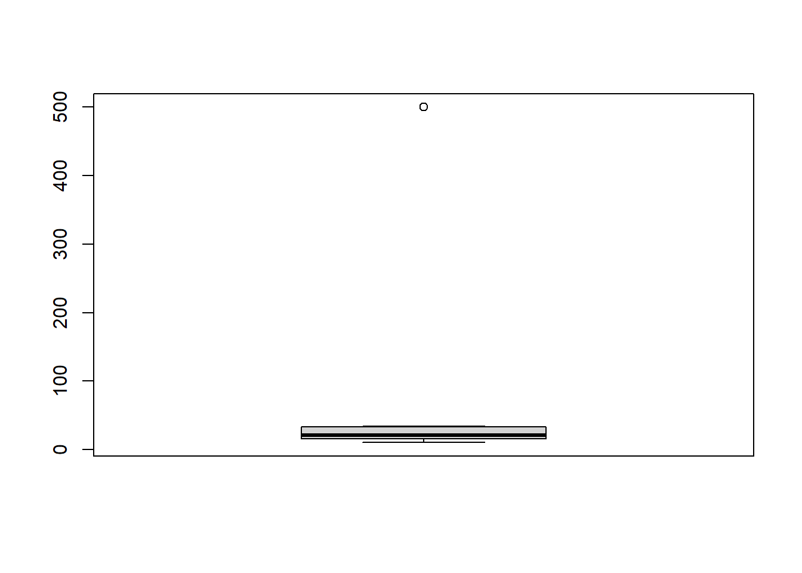

What does it mean to clean data? Raw data, or the data you obtain directly from measurement, and has yet to be processed and made digestible for human consumption. This is because raw data can missing data, contain errors, weird characters or symbols, personally identifiable information (information that can help identify an individual and break anonymity), or other things that you’d rather not have in there. Therefore, raw data needs to be cleaned (or cleansed or scrubbed) to proceed to data analysis, inference, visualization, and reporting.
There is no standard definition of data cleaning, but in general it means that you want to fix any issues in your data before you do anything else. This makes sense right? You don’t want to analyze data which has a bunch of errors in it, as that could bias your results, create a misleading interpretation, and ultimately introduce noise and distortion into the scientific literature. When it comes data analysis, remember the acronym GIGO, which is explained in Figure 8.1.

Figure 8.1: GIGO: Garbage In, Garbage Out. Your analyses are only as good as the quality of your data.
Let’s now dig into some basic data cleaning issues.
8.1 Basic Folder Structure
There are several potential errors you can detect while looking at raw data. The first thing you should do is separate out raw data from the dataset you will be cleaning, and eventually produced a clean dataset. Leave the raw data in an encrypted folder or other secure location, and work with just the cleaned data (or data that will be cleaned). This will prevent you from overwriting the original dataset and making any errors in data cleaning permanent.

Once this separation of raw and clean (or to be cleaned) data is established, you can begin working on cleaning.
8.2 The Pipe Operator (%>%)
This is a probably a good time to introduce one of the most useful collections of packages in R - the tidyverse!
The tidyverse is an opinionated collection of R packages designed for data science. All packages share an underlying design philosophy, grammar, and data structures.
It currently has about 30 packages which can all be installed simultaneously with install.packages("tidyverse"). Once you load the tidyverse, you can see a full list of its packages with the function tidyverse_packages().
The tidyverse is a collection of useful tools that are commonly used by R users. In particular, the packages dplyr, and ggplot2 are the stars of the show, and very useful for data wrangling and visualization, which is what we will focus on mainly in this book.
The pipe operator %>% is used to combine functions in a way that sets up a chain of operations. It was originally part of the magrittr package, and now comes standard with the dplyr package as well. The pipe is essential telling R “Take the output from the left side and pass it into the right side as the first argument.” Put more simply, the pipe is saying “Take this [stuff on left] and put it through that [stuff on right]”. This is important because it can make our code more efficient when we want to multiple things. Let’s look at a simple example.
library(dplyr)# First, let's randomly sample 10 numbers from a normal distribution.x <-rnorm(10)print(x)
# Here's the slow way to 1) Add five to every number in the vector; 2) round the numbers to one decimal place; 3) take the log of the numbers; and 4) take the mean of the resulting numbers. ## First, we add five to every number in the vectorx <- x +5print(x)
y %>%`+`(5) %>%# Notice that arithmetic operators are surrounded by backticks `` and scalar values are surrounded by parentheses.round(digits =2) %>%# Only the second argument is needed, since the first argument is the vector being passed by the pipes.log() %>%mean() %>%print()
[1] 1.626611
# The summary() function can also provide us with useful information very easily. This information is the interquartile range, including the median and mean.y %>%summary()
Min. 1st Qu. Median Mean 3rd Qu. Max.
-1.423514 -0.494425 0.008442 0.213246 1.297890 1.949790
We can also use the pipe operator to manipulate dataframes, including operations with string vectors or columns. Importantly, note that the pipe operator puts the output from the left side as the first argument on the right side. However, this becomes a problem when we use a function whose first argument is not a dataframe or vector, such as the gsub() function. In such cases, you can put a period . in the place where the vector or dataframe should go. Let’s look at an example.
# Let's create a small dataframe.bball <-data.frame(team =c("San Antonio","San Antonio","New Orleans","Washington","Utah","Milwaukee","Cleveland"),player_name =c("Romeo Langford","Jakov Poeltl","Dyson Daniels","Will Barton","Mike Conley","Joe Ingles","Raul Neto"),points =c(2,23,35,23,8,33,28) )# Let's use the pipe operator to chain some functions together! The functions below change the team names and finally print the unique entries in the vector using the unique() function.bball$team %>%gsub("San Antonio", "San Antonio Spurs", .) %>%gsub("New Orleans", "New Orleans Pelicans", .) %>%gsub("Washington", "Washington Commanders", .) %>%gsub("Utah", "Utah Jazz", .) %>%gsub("Milwaukee", "Milwaukee Bucks", .) %>%gsub("Cleveland", "Cleveland Cavaliers", .) %>%unique()
[1] "San Antonio Spurs" "New Orleans Pelicans" "Washington Commanders"
[4] "Utah Jazz" "Milwaukee Bucks" "Cleveland Cavaliers"
8.3 Illogical Values & Typos
One of the first things I always do with a raw data set is to check if there are any illogical values. These are values that fall outside of the acceptable set of response options for a particular variable. For example, if a question is asking about a participant’s age in years, a value of 366 would be an illogical value since humans cannot yet live that long. However, a value of 366 for a variable about age in months makes perfect sense, as it translates to an age of about 30 years, which is a logical value. As another example, if a survey of undergraduate students conducted at Boston University asks them to state their class year (e.g. first year, freshman, second year, sophomore, etc), and you see some entries with the value “Boston University”, this is an illogical value. It should either be modified to the correct class year, or deleted and left as missing data.
Commonly, typos can create illogical values. These should be fairly obvious if you a codebook, which is a document providing the name, description, and meaning of each variable, including how it is coded and what response options are valid. These could be incorrect or illogical entries, but could also be logically but with incorrect punctuation. For example, entries for a variable about one’s favorite color may contain entries red, RED, Red, or rED. These are all logical values, but they differ in which letters are capitalized, potentially leading to issues in the analysis. Thus, they should all be standardized. I would change them all to red. There is no special reason for this particular format, other than consistency, but I have found that lowercase variable names introduce less potential for errors due to capitalization.
8.4 Duplicate Values & Outliers
Different participants can have the same response to particular questions or variables. However, if different participants have EXACTLY the same values across ALL variables, then you more than likely have a case of a duplicate value, which should be removed. Duplicate values are key sources of bias, and can inflate or mask detectable effects, leading to misleading interpretations. Sometimes duplicate values can arise as errors when multiple data sets are joined together. A simple approach to avoiding this problem is to count the rows and columns in each dataset before they are joined together, and then ensure the total rows and columns after joining corresponds to the sum of rows and columns from each individual dataset.
Outliers are values that are abnormally far away from other values in your dataset. Imagine you take the average net worth of five people sitting at a bar. Even though the average net worth of the first four people is $64,501, the average net worth of all five people at the bar comes to $ 58 billion! How is that possible? Because the fifth person at the bar is Bill Gates, whose 2023 net worth was $117.5 billion. Gates’ net worth value is an outlier because 117.5 billion is VERY VERY far distant from $64,501.
For right now, the important thing to note is that you should NOT remove outliers just because they are outliers. Outliers should only be removed if they represent true data entry/collection errors. For example, if an adult’s weight is entered as 12 pounds, this is likely a data entry error, but if their weight is listed as 432 pounds, this is a legitimately possible value, and if true, should not be removed. When outliers are legitimate extreme values, they represent a natural section of the population which you are studying. They are providing you information that should not be discarded simply to fit models easier, as this is a type of cherry-picking of the data which is . Rather, one should use statistical tests that are robust to outliers in such cases.
Some people, such as professor of data science Pasquale Cirillo make a nice distinction between outliers (values that are not possible because they are too extreme in magnitude) and extremes (values that are possible and extreme in magnitude), show in Figure 8.2.

Figure 8.2: The bounds for a legitimate value depend on the variable, and should guide your choice to delete or retain the value.
8.5 Detecting Illogical or Extreme Values
One simple method of determining whether there exist illogical values in a numeric variable is to look at the maximum and minimum values (ensuring that they correspond to logical values for that variable) using the range() function. Similarly, boxplots boxplot() and histograms hist() are also useful. Let’s look at the built-in mtcars data frame.
# Assign the mtcars dataframe to an object named df1df1 <- mtcars# I add a few outliers to the 'mpg' columndf1[c(2,5,7,9:11,22), 1] <-500# Let's examine the range of values in the 'mpg' column starting with the range.range(df1$mpg)
[1] 10.4 500.0
Immediately, I see that the minimum value of 10 miles per gallon appears logical (think bigger SUVs which are less fuel-efficient than smaller sedan cars). However, the maximum value of 500 miles per gallon is not logical at all. How do I know? Well, for one I put in these entries. But if I didn’t know, a quick Google search tells me that the most fuel efficient gasoline car achieves 42 miles per gallon on the highway, and the most fuel efficient electric car achieves an 84 miles per gallon-equivalent. Thus, 500 miles per gallon is more of a distant dream rather than an accurate value.
Let’s then visualize the variable with a histogram and a boxplot.
# Next, let's look at a histogram of valueshist(df1$mpg)

# Next, let's look at a boxplot of the mpg variable.boxplot(df1$mpg)

The histogram shows us that the majority of values are less than 100, and a small subset of values lie around 500. This suggests that 500 might be an outlier value. The boxplot suggests that same, but provides us the Interquartile Range (IQR), which refers to the 25th percentile to 75th percentile of the data. The IQR is used to build box plots, which also display ‘whiskers’ or lines extending above and below the box, corresponding to 1.5 times the 75th percentile and 1.5 times the 25th percentile. If data points are outside the whiskers, these can be outliers. The boxplot above is super squished, and we can see a dot at 500. This indicates that a value of 500 might be an outlier.
The rstatix package also has some useful functions for detecting outliers. The identify_outliers() function in particular returns you a data frame with two new columns indicating whether a specific value is an outlier (defined in this package as 1.5 times the IQR) or an extreme value (defined in this package is 1.5 times the IQR).
The resulting data frame shows the seven unique values that are 1.5 and 3 times the IQR (see the two columns added at the end). For our purposes, this helps identify the specific outliers or extreme values. In this case, we have already determined that 500 is an illogical value for the fuel efficiency (miles per gallon) of cars. Thus, we can delete the values and replace them with NA to indicate missing values. To accomplish this, let’s use the which() function and %in% operator to identify the rows with a value of 500 for mpg from our original dataset. The which() function gives us the position or index which satisfies a given condition. Recall that the %in% operator checks whether the values in the first argument are present in the second argument, and returns a logical value. When we combine which() with the %in% operator, and add those into the first argument in square brackets after a dataframe, this will give the specific rows that satisfy a particular condition.
# Identify rows with mpg == 500df1[which(df1$mpg %in%500),]
# Replace 500 with NAdf1[which(df1$mpg %in%500), 1] <-NA
If we view the resulting dataframe, we can see that the mpg variable for the rows in question have all been replaced with NA to indicate missing data (indicated with red squares).
Another key component of the data cleaning process is to prepare your set of variables for analysis. In R, since it is very easy to work with multiple dataframes at the same time (just assign them to different objects), it’s a good idea to create a dataframe with only the variables you need for the analysis. This is not strictly necessary, but keeps this organized, easy to view, and manageable. If you only need 20 variables for an analysis, why work with 175 variables in a data frame? It’s better to keep what you need and save those to a new dataframe.
This is easily accomplished by subsetting the dataframe based on one or more conditions. This could be a particular variable value, a particular set of rows, or some other condition. Let’s demonstrate this using data from the CrossFit Games from 2007-2023.
# First let's import our CSV dataframe, and see the dimensions.crossfit <-read.csv("~/R Book/Datasets/crossfit.csv", header =TRUE)dim(crossfit)
[1] 1714 30
# Next, let's have a quick peek at the first 10 rows and first six columns.head(crossfit[, c(1:6)], n =10)
competitorId competitorName firstName lastName gender genderId
1 1616 Russ Greene Russ Greene M 1
2 1616 Russ Greene Russ Greene M 1
3 1685 Christopher Woods Christopher Woods M 1
4 1690 Travis Mayer Travis Mayer M 1
5 1690 Travis Mayer Travis Mayer M 1
6 1690 Travis Mayer Travis Mayer M 1
7 1690 Travis Mayer Travis Mayer M 1
8 1690 Travis Mayer Travis Mayer M 1
9 1690 Travis Mayer Travis Mayer M 1
10 1690 Travis Mayer Travis Mayer M 1
Let’s say I’ve also had a more detailed look at the data, either beforehand using a codebook, or after importing the data into R and using the View() function. I’ve decided to conduct a descriptive analysis by examining the competitors with the most competition starts, the highest ranks, as well as some of their demographic characteristics. I decide to analyze the following variables shown in Table 8.1.
Table 8.1: List of variables I will retain for analysis.
Variable Name
Description
Variable Type
competitorId
Competitor’s unique identification number.
Factor
competitorName
Competitor’s full name.
Factor
gender
Competitor’s gender (male or female only in this dataset).
Factor
age
Competitor’s age at the time of competition.
Numeric
height
Competitor’s height in centimeters.
Numeric
weight
Competitor’s weight in kilograms.
Numeric
countryOfOriginName
Competitor’s country of origin
Factor
year
Year that competitor participated in competition.
Factor
overallScore
Competitor’s overall CrossFit score.
Numeric
overallRank
Competitor’s overall CrossFit rank.
Numeric
You will notice that I put the type of variable in a column as well. This is not necessarily the variable type currently in the dataframe, but rather, the type of variable I want the variable to be before I proceed to any sort of analysis. If the variable is not in the correct class I want, I will transform it to the correct class.
To subset these variables, I can use the helpful subset() command from base R, where the first argument is the object to be subsetted, and the second argument can be used to select the variables I want to retain.
library(dplyr)# Keep only the variables I want using subset().crossfit2 <-subset(crossfit, select =c("competitorId","competitorName","gender","age","height","weight","countryOfOriginName","year","overallScore","overallRank") )head(crossfit2[, 1:7], n =10)
competitorId competitorName gender age height weight countryOfOriginName
1 1616 Russ Greene M 20 178 83
2 1616 Russ Greene M 21 178 83
3 1685 Christopher Woods M 29 163 82
4 1690 Travis Mayer M 23 181 93 United States
5 1690 Travis Mayer M 25 181 93 United States
6 1690 Travis Mayer M 26 181 93 United States
7 1690 Travis Mayer M 28 181 93 United States
8 1690 Travis Mayer M 29 181 93 United States
9 1690 Travis Mayer M 30 181 93 United States
10 1690 Travis Mayer M 31 181 93 United States
8.6.2 (Re)Naming
Alright, that’s looking pretty good. I’ve got all the variables I want saved in a new dataframe called crossfit2. However, I’m not really digging some of the variable names. Some of them like countryOfOriginName got some weird capitalization going on, which can increase the likelihood of an error later on. Let’s make simpler names for all variables. Remember, any final variable names should be reflected in an updated codebook. This applies for any dataframe you work with, because reproducibility involves careful documentation of variable transformations and choices.
# First, let's look at all variable names in our smaller dataframe.names(crossfit2)
# Next, since I want to make changes to most of the names, let's create a new vector of names and replace the old ones.newnames <-c("id","name","gender","age","height","weight","country","year","score","rank")names(crossfit2) <- newnames# Let's check that it worked correctly.names(crossfit2)
# If we wanted to change a few variable names instead of writing out a whole vector, we can use the rename() function from the dplyr package. In this function the first argument is the new name, then an equals sign, and finally the old name.crossfit2 <- crossfit2 %>%rename(score_overall = score) %>%rename(rank_overall = rank)names(crossfit2)
Alright, so we now how to modify variable names. But what about variable labels? These are brief descriptions of each variable that are helpful to have in a dataframe to facilitate reproducibility. Even if you have a codebook, having variable labels can be useful for quick reference, and to know which variables are relevant to one’s analyses. This can be accomplished easily using the expss package’s apply_labels() function. The function takes the dataframe as the first argument, followed by a list of variables equal to their variable labels in quotes. Note: if the variable name contains spaces, then you should put it in quotes, or R won’t recognize it as a variable name in this function.
Let’s go ahead and add some variable labels to these variables. We can then either View() the dataframe to see the variable labels, or use the str() function to have a quick look.
library(expss)# Let's add variable labels to all the variables.crossfit2 <-apply_labels(crossfit2,id ="Participant's unique identification number",name ="Participant's full name",gender ="Participant's gender",age ="Participant's age at time of competition",height ="Participant's height (in centimeters)",weight ="Participant's weight (in kilograms)",country ="Participant's country of origin",year ="Participant's year of competition",score_overall ="Participant's total CrossFit Games Score",rank_overall ="Participant's overall CrossFit rank" )str(crossfit2)
'data.frame': 1714 obs. of 10 variables:
$ id :Class 'labelled' int 1616 1616 1685 1690 1690 1690 1690 1690 1690 1690 ...
.. .. LABEL: Participant's unique identification number
$ name :Class 'labelled' chr "Russ Greene" "Russ Greene" "Christopher Woods" "Travis Mayer" ...
.. .. LABEL: Participant's full name
$ gender :Class 'labelled' chr "M" "M" "M" "M" ...
.. .. LABEL: Participant's gender
$ age :Class 'labelled' int 20 21 29 23 25 26 28 29 30 31 ...
.. .. LABEL: Participant's age at time of competition
$ height :Class 'labelled' num 178 178 163 181 181 181 181 181 181 181 ...
.. .. LABEL: Participant's height (in centimeters)
$ weight :Class 'labelled' num 83 83 82 93 93 93 93 93 93 93 ...
.. .. LABEL: Participant's weight (in kilograms)
$ country :Class 'labelled' chr "" "" "" "United States" ...
.. .. LABEL: Participant's country of origin
$ year :Class 'labelled' int 2007 2008 2008 2014 2016 2017 2019 2020 2021 2022 ...
.. .. LABEL: Participant's year of competition
$ score_overall:Class 'labelled' int 232 21 19 483 702 674 368 0 822 685 ...
.. .. LABEL: Participant's total CrossFit Games Score
$ rank_overall :Class 'labelled' int 11 53 32 29 10 12 12 19 12 18 ...
.. .. LABEL: Participant's overall CrossFit rank
# Let's say we only want to add variable labels for one variable. Then we can use the var_lab() function. var_lab(crossfit2$score_overall) <-"Total CrossFit Games score"var_lab(crossfit2$score_overall)
[1] "Total CrossFit Games score"
8.6.3 Transformation & Creation
Now that we know how to rename and subset the variables we want, what about transforming an old variable into a new one? Say that we wanted to derive a new height variable (in feet) from our existing height variable (in centimeters). From a quick Google search, I learn that to convert from centimeters to feet involves dividing the centimeters by 30.48.
Similarly, let’s also derive a new weight variable (in pounds) from our existing weight variable (in kilograms). Once again, a quick Google search tells me that to convert from kilograms to pounds involves dividing the kilograms by 0.45359237.
We can easily derive one variable from another in this fashion using the mutate() function from the dplyr package.
# Convert centimeters to feet in a new variable called height_feet.crossfit2 <- crossfit2 %>%mutate(height_feet = height /30.48) # Let's look at these two variables side-by-side.head(crossfit2[, c("height", "height_feet")], n =10)
# Ok, it looks good generally. But, I'm not liking the many decimal places in the height_feet variable. In everyday parlance, we usually refer to someone as, for example, "five foot eight" and not "five foot eight point 39895". So let's use the round() function to shorten this variable to one decimal place.crossfit2$height_feet <-round(crossfit2$height_feet, digits =1)# Let's see if it worked.head(crossfit2[, c("height", "height_feet")], n =10)
# Great, now let's do the same with the new variable weight_lbs.crossfit2 <- crossfit2 %>%mutate(weight_lbs = weight /0.45359237)# Let's check out the variables side-by-side.head(crossfit2[, c("weight", "weight_lbs")], n =10)
# Let's round this to the nearest unit, and see if it works.crossfit2$weight_lbs <-round(crossfit2$weight_lbs, digits =0)head(crossfit2[, c("weight", "weight_lbs")], n =10)
Before we can summarize the data with some descriptive analyses, we need to make sure the the variable classes match those in Table 8.1. To quickly look at all the variable types in the dataframe, we can use the str() function.
str(crossfit2)
'data.frame': 1714 obs. of 12 variables:
$ id :Class 'labelled' int 1616 1616 1685 1690 1690 1690 1690 1690 1690 1690 ...
.. .. LABEL: Participant's unique identification number
$ name :Class 'labelled' chr "Russ Greene" "Russ Greene" "Christopher Woods" "Travis Mayer" ...
.. .. LABEL: Participant's full name
$ gender :Class 'labelled' chr "M" "M" "M" "M" ...
.. .. LABEL: Participant's gender
$ age :Class 'labelled' int 20 21 29 23 25 26 28 29 30 31 ...
.. .. LABEL: Participant's age at time of competition
$ height :Class 'labelled' num 178 178 163 181 181 181 181 181 181 181 ...
.. .. LABEL: Participant's height (in centimeters)
$ weight :Class 'labelled' num 83 83 82 93 93 93 93 93 93 93 ...
.. .. LABEL: Participant's weight (in kilograms)
$ country :Class 'labelled' chr "" "" "" "United States" ...
.. .. LABEL: Participant's country of origin
$ year :Class 'labelled' int 2007 2008 2008 2014 2016 2017 2019 2020 2021 2022 ...
.. .. LABEL: Participant's year of competition
$ score_overall:Class 'labelled' int 232 21 19 483 702 674 368 0 822 685 ...
.. .. LABEL: Total CrossFit Games score
$ rank_overall :Class 'labelled' int 11 53 32 29 10 12 12 19 12 18 ...
.. .. LABEL: Participant's overall CrossFit rank
$ height_feet :Class 'labelled' num 5.8 5.8 5.3 5.9 5.9 5.9 5.9 5.9 5.9 5.9 ...
.. .. LABEL: Participant's height (in centimeters)
$ weight_lbs :Class 'labelled' num 183 183 181 205 205 205 205 205 205 205 ...
.. .. LABEL: Participant's weight (in kilograms)
We can see that though some variables are in the correct class (e.g. year, score_overall, etc.), others are not (e.g. id, name, gender, and country). These variables are currently stored as strings (or characters), whereas we want them to be factors. This is why people often add the argument stringsAsFactors = TRUE to the read.csv() function, which automatically converts character variables to factor, which is the appropriate class for categorical variables. However, even if you invoke this argument, there will still be some variables that are misclassed. Most commonly, ID variables are often classes as integers, whereas they should really be factors, since they are discrete identifiers.
For now, let’s convert all the misclassed variables in the dataframe to factor using two methods: 1) a simple but inefficient approach, and 2) a slightly more complex but more efficient approach.
# First, let's use the simple approach.crossfit2$id <-as.factor(crossfit2$id)# You can always use this approach with each variable one-by-one. But let's use a more efficient approach.catvars <-c("id", "name", "gender", "country")crossfit2 <- crossfit2 %>%mutate(across(catvars, as.factor) )# Let's check if it workedstr(crossfit2)
We can see that the four variables are now correctly classed as factor. Notice that the more efficient approach involves the mutate(), across(), and as.factor() functions. We’ve already seen mutate()function, but note that the across() function allows us to carry out an operation across multiple columns. We created a vector called catvars of column names we want to manipulate, and passed that into the across() and mutate() functions. Finally, the as.factor() function is used without parentheses in order to re-class the variables to factor. Similarly, you can convert variables to numeric using the as.numeric() function, and convert to character using the as.character() function.
8.7 Saving Your Cleaned Dataframe
8.7.1 As an R Data File
Once you’re satisfied that the data are clean and ready for analysis, you can save the cleaned dataframe (or any object) as as an R Data file (.Rdata) or an RDS file (.RDS). R Data files can store multiple objects, while RDS files can only store a single R object. I tend to prefer R Data files as I can use them to store and load multiple objects at once. The save() function takes the R object names you want to save as the first n arguments, followed by the file =argument in which you specify a file name (and path) for saved object(s) in quotes and with the .Rdata file extension. To retrieve the object, simply use the load() function with the object name in quotes.
R data files are native to R, and you might want to save your dataframe in other formats. Perhaps, you want to save your data frame in Excel format (.xlsx). This can be done using the writexl package, and the write_xlsx() function where the first argument is the R object you want to save, and the second argument is the name (and path) of the Excel file with the .xlsx file extension.
To export to CSV format, you can use the built-in write.csv() function, where the first argument is the R object name, and the second is the file name (and path). I also recommend a third argument row.names = FALSE which gets rid of the row numbering which you already have when you open a spreadsheet.
# To export to Excel format, use the writexl package.library(writexl)write_xlsx(crossfit2, "crossfitdf.xlsx")# To export to csv, use the write.csv() function.write.csv(crossfit2, "crossfitdf.csv", row.names =FALSE)
8.7.3 As a Stata, SPSS, or SAS File
If you want to export to SAS, SPSS, or SAS formats, we can use the haven package. For SAS, you can use the write_xpt() function. For Stata, you can use the write_dta() function. For SPSS, you can use the write_sav() function. The first argument of each is the R object to be saved, and the second argument is the name of the file (and path) with the appropriate file extension.
library(haven)# Export to SAS formatwrite_xpt(crossfit2, "crossfitdf.xpt")# Export to Stata formatwrite_dta(crossfit2, "crossfitdf.dta")# Export to SPSS formatwrite_dta(crossfit2, "crossfitdf.sav")
8.7.4 As a Text File
The write.table() function can be used to export your dataframe to a text file. As with the other functions, the first argument is the R object to be exported, and the second is the name (and path) with the appropriate file extension. I recommend using a separator for readability using the sep =argument. Common choices for separator are commas sep = "," or tabs sep = "\t".
# Export to text filewrite.table(crossfit2, "crossfitdf.txt", sep ="\t")
8.8 Exercises
As always, it’s a good idea to attempt these while the material is still fresh. You can find the answers in Appendix E.
Next, let’s fix some errors and make some changes!
First, let’s create some more descriptive variable names. Change the existing variables names to Name, Ingredients, Preparation Time (mins), and Origin (state). Then, print the names of the dataframe.
Next, having read through the ingredients, we can see various typos that should be fixed. Go ahead and fix the spelling mistakes (typos) you see in the Ingredients column. Hint: there are four spelling mistakes in theIngredientscolumn, and we are using standard American English for spelling.
I see that the ingredients list has the terms “cottage cheese”, “clarified butter”, and “naan bread.” Substitute paneer for “cottage cheese” and remove “clarified butter” since there is already ‘ghee’ in the same row, which is pretty much the same thing. Also, remove ‘bread’ from “Naan bread”, since that is unnecessary. Then print the Ingredients column.
Let’s check the class of the Origin (state) variable. If it is not already in factor class, go ahead and convert it to factor. Make sure to save the new factor-classed variable back in the dataset. Then, check the class of the variable again to make sure it is factor.
Next, let’s add some variable labels to each variable. The variable labels can say whatever you think might be helpful. In general, think of some description that will provide context if you are looking at these data for the first time. Then, do something to check if it worked. Hint: you’ve seen two ways to do this.
Finally, let’s have a look at the Preparation Time (mins) variable to detect any outliers. Print the range of values and produce a histogram of this variable. Are any values seemingly outliers from the histogram?
If you detected an outlier in the previous question (and I hope that you did!), explain your decision as to remove it or retain it in the dataframe. If you choose to remove the outlier value, replace it with a more plausible value derived from a quick Google search. Then, print the variable.
Finally, save your cleaned indianfood dataframe as an R data file as well as a CSV file using the file name of your choice.